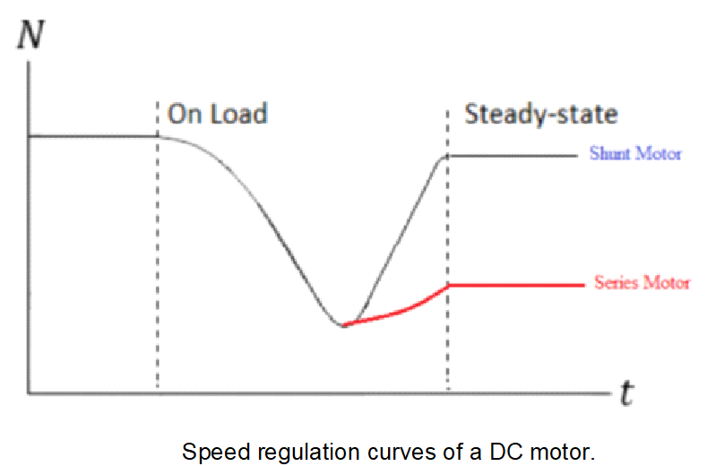
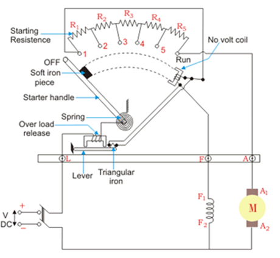
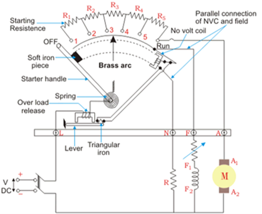
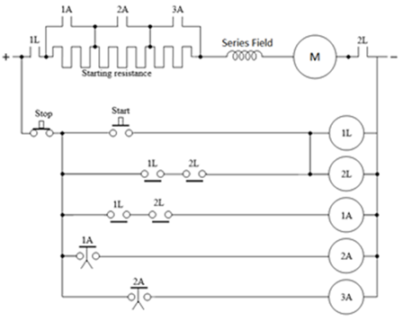
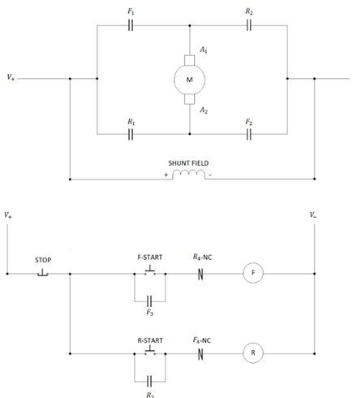
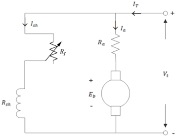
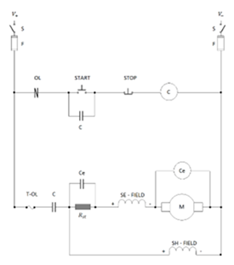

1. As shown in the diagram below, explain the speed regulation characteristic of a DC series motor when load is added. [6 marks]

2. Explain the basic principles of starting a DC motor, assuming that the back emf is yet to be developed. [6 marks]
3. As shown in the diagram below, explain the operation of the motor, assuming that the handle is moved to position 5. [4 marks]

4. As shown in the diagram below, explain how the improvements can overcome its predecessor. [6 marks]

5. As shown in the diagram below, assuming that "start" push button was pressed momentarily before timer contactors had elapsed. [5 marks]

6. As shown in the diagram below, explain the forward operation assuming that "R-start" push button was pressed momentarily. [3 marks]

7. Explain the working principles of starting a synchronous motor, assuming that it is operated via external prime mover. [5 marks]
8. Explain the working principles of starting a generator, assuming that D.C. excitation current is applied. [5 marks]
9. As shown in the diagram below, explain how the speed of a DC shunt motor can be controlled. [6 marks]

10. As shown in the diagram below, explain how the speed of a DC series motor can be controlled. [6 marks]
11. As shown in the diagram below, explain the operation of the motor, assuming that the handle is moved to "RUN" position. [5 marks]
12. As shown in the diagram below, explain the operation of the motor, assuming that the handle is moved to "RUN" position. [3 marks]
13. As shown in the diagram below, explain the operational procedures after all timer contactors had elapsed. [3 marks]
14. As shown in the diagram below, explain the operational procedures assuming that "start" push button was pressed momentarily and the back emf insufficient. [3 marks]

15. As shown in the diagram below, explain the operational procedures assuming that "start" push button was pressed momentarily and the back emf sufficient. [4 marks]
16. Explain the working principles of starting a synchronous motor, assuming that the rotor is stationary. [5 marks]
17. Explain the working principles of starting a generator, assuming that D.C. excitation current is not applied. [5 marks]
18. As shown in the diagram below, explain the speed regulation characteristic of a DC shunt motor when load is added. [5 marks]
19. Explain the need of having variable resistors when starting a DC motor. [5 marks]
20. Explain the reason for a DC shunt motor having thick field coils. [1 mark]
21. Explain the reason for a DC series motor having large field coils. [1 mark]
22. As shown in the diagram below, explain the operation of the motor, assuming that the handle is moved to position 1. [5 marks]
23. As shown in the diagram below, explain the operation of the motor, assuming that the handle is moved to position 1. [5 marks]
24. As shown in the diagram below, explain the operational procedures when timer contactors elapsed successively. [3 marks]
25. As shown in the diagram below, explain the forward operation assuming that "F-start" push button was pressed momentarily. [5 marks]
26. Explain the working principles of starting a synchronous motor, assuming that it is operated via induction starting. [5 marks]
27. State the conditions prior to synchronizing an alternator to a bus network. [5 marks]